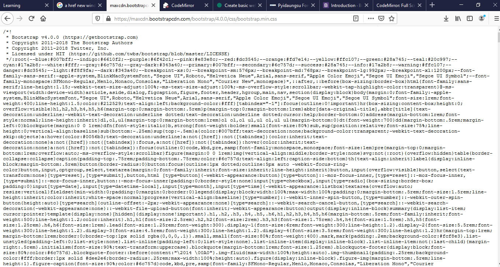
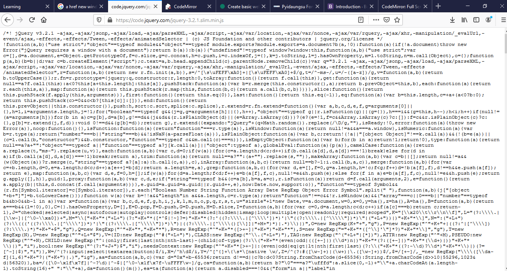

Bootstrap ကို local မှာ ထည့်သွင်းသုံးတာနဲ့ online ပေါ်ကနေ တိုက်ရိုက်သုံးတာမျိုးရှိပါတယ် Online ပေါ်ကနေသုံးမယ်ဆိုရင် ဒီ link တွေကို ကိုယ့်ရဲ့ HTML page မှာထည့်သွင်းရပါမယ်။
Link က css အတွက်ပါ
Script က javascript အတွက်ပါ
ကိုယ့်ရဲ့ HTML page မှာ ယခုလို ထည့်သွင်းပေးရမှာပါ
Bootstrap ကို local ထဲထည့်သုံးချင်ရင် ခုနက css link နဲ့ javascript srcipt link တွေကို copy ယူပြီး Browser Address မှာ paste လုပ် ပေါ်လာတာတွေကို Select All လုပ် copy ယူ css/js file create လုပ်ပြီး ကိုယ့် Project အောက်ကို သွားထည့်ပေးရုံပါပဲ file save တဲ့အခါ css file သိမ်းချင်ရင် filename.css(file extansion=>.css) လို့သိမ်းရပါမယ် js file သိမ်းချင်ရင် filename.js(file extansion=>.js) အလိုသိမ်းပြီးရင် အ့ file တွေကို ကိုယ့်ရဲ့ local project html file မှာ ပြန်ခေါ်သူံးရပါမယ်
Css
js

*file တွေသိမ်းပြီး ကိုယ့်ရဲ့ ့ HTML page မှာ ခေါ်သုံးတဲ့အခါ file path လမ်းကြောင်းမှန်ကန်ရပါမယ်
Bootsrap ရဲ့ documentation ကို ဒီမှာ ဖတ်လို့ရပါတယ်။